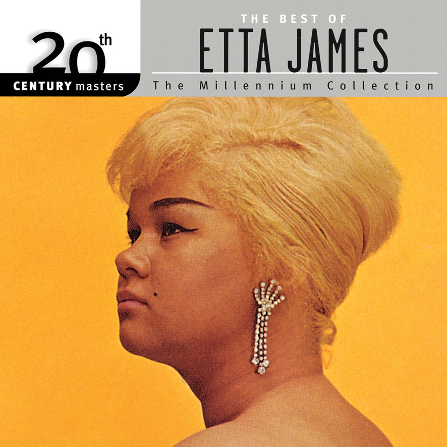

Etta James ◆ All I Could Do Was Cry ◆ 1960
虽然没有 Janis Joplin 那么震撼，但是也几乎不遑多让了。越智志帆的偶像是 Janis Joplin，Janis Joplin 的偶像是 Etta James，这就是传承啊～（拭泪）
I heard church bells ringing
I heard a choir singing
I saw my love walk down the aisle
On her finger he placed a ring
Oh, I saw them holding hands
She was standing there with my man
I heard them promise "Till death do us part"
Each word was a pain in my heart
All I could do, all I could do was cry (cry, cry, cry)
All I could do was cry (cry, cry, cry)
I was losing the man that I loved
And all I could do was cry (cry, cry, cry)
Yeah and now the wedding's over
Rice, rice has been thrown over their heads
For them life has just begun
But mine is at an end
All, all I could do, all I could do was cry (cry, cry, cry)
All I could do was cry (cry, cry, cry)
I was losing the man that I loved (cry, cry, cry)
And all I could do was cry (cry, cry, cry)